- 2014
-
• 25 y 26 de enero en Cosquín − Córdoba: seminario "Música y Autogestión" dentro de las actividades de la Dirección Nacional de Acción Federal de Cultura de Nación.
• 31 de enero en Cosquín − Córdoba: presentación del INAMU en el Festival de Cosquín Folklore. Actividad realizada dentro de las presentaciones especiales de la Dirección Nacional de Acción Federal a cargo de la Dra. María Elena Troncoso.
• 2 de Marzo en Cosquín − Córdoba: presentación del INAMU en el Festival Cosquín Rock.
• 13 de marzo en Ciudad de Buenos Aires: charla "El INAMU y la Música Contemporánea" en el marco del Festival "Nuevas músicas por la Memoria", realizado en el Espacio Cultural Nuestros Hijos (ECuNHi)
• 20 de marzo en Coronel Pringles − Buenos Aires: charla sobre la Ley de la Música en el Hotel Avenida.
• 4 de abril en Necochea: charla sobre la Ley de la Música con la coordinación de la Dirección General de Juventud, en el Teatro Municipal "Luis Sandrini" y en el Centro Cultural de la ciudad.
• 9 de mayo en Ushuaia − Tierra del Fuego: charla sobre la Ley de la Música en la sede del PAMI. Organizó AFSCA, INAMU, Cultura de Nación, Radio Nacional Ushuaia y el concejal local Walter Vuoto.
• 26 y 27 de mayo en Resistencia − Chaco: Seminario sobre Derechos Intelectuales en la Música y Ley de la Música. Organizó la Dirección de Industrias Culturales del Instituto de Cultura de Chaco y la Asociación de músicos Arazá.
• 28 de mayo en Roque Sáenz Peña − Chaco: Seminario sobre Derechos Intelectuales en la Música y Ley de la Música. Organizó: la Dirección de Industrias Culturales del Instituto de Cultura de Chaco y la Asociación de músicos Arazá.
• 29 de mayo en San Miguel − Buenos Aires: charla sobre la música independiente y la Ley de la Música en la I jornada de Capacitación de la Diplomatura de Sonido e Imagen de la Universidad Nacional de General Sarmiento (UNGS).
• 3 de junio en Ciudad de Buenos Aires: Charla sobre "Derechos intelectuales en la Música" en la II Jornada sobre la Ley de la Música en el Auditorio de Radio Nacional AM 870.
• 13 de junio en Caseros − Buenos Aires: charla sobre Derechos Intelectuales en la Música para alumnos de la Universidad Tres de Febrero (UNTREF).
• 3 de julio en Cañuelas− Buenos Aires: charla sobre los puntos principales y el proceso de construcción de la Ley Nacional de la Música. La actividad se realizó en el centro cultural Volveré.
• 18 de julio en Moreno − Buenos Aires: charla sobre la Ley de la Música. La actividad se llevó a cabo en el teatro Municipal "Leopoldo Marechal".
• 2 de agosto en Asunción − República del Paraguay: charla sobre la Ley de la Música. La actividad se llevó a cabo en la Casa de la Música Agustín Pio Barios.
• 15 de agosto en San Pedro − Jujuy: charla sobre la Ley de la Música y el artículo 65 de la Ley de Medios Audiovisuales. La actividad se desarrolló en el Centro Cultural "La Esquina".
• 7 de septiembre: en diferentes puntos del país como la Ciudad Autónoma de Buenos Aires, Escobar, Santiago del Estero, Córdoba, Tandil, Santa Fe, Entre Ríos, Mendoza y Tucumán se organizó, junto al Ministerio de Cultura de la Nación, una jornada de música en vivo en homenaje al músico Gustavo Cerati. Adhirieron la Federación Argentina de Músicos Independientes (FA−MI), Músicos Convocados, la Federación Independiente de Músicos de la Argentina (FIMA), Asociación civil Músicos en Sintonía Fina y el Frente de Artistas Ambulantes Organizados.
• 12 de septiembre en Rosario −Santa Fe: charla sobre la Ley de la Música en el Centro Cultural "La Toma". Organizada por El Qubil Músicos Independientes de Rosario.
• 23 de septiembre en Guaymallén −Mendoza: charla sobre la Ley de la Música en la VII Edición del Festival Tango por los Caminos del Vino, en el espacio cultural "Julio Le Parc". Organizada por: Ministerio de Cultura de Mendoza, la Federación Independiente de Músicos de la Argentina (FIMA) y el Movimiento Independiente de Músicos Mendocinos (MIMM).
• 24 de septiembre en General Alvear − Mendoza: charla informativa sobre la Ley Nacional de la Música en el Consejo Deliberante de la Ciudad
• 26 de septiembre en Rivadavia − San Juan: charla a los alumnos de la Orquesta Escuela de la localidad. Luego de un breve concierto, hubo una reunión con los funcionarios municipales, en donde se trataron temas referidos a la cultura y la música.
• 10 de octubre en General Rodríguez − Buenos Aires: charla informativa sobre la Ley de la Música en la sala "Biólogo Augusto Thibaud" del Honorable Consejo Deliberante de dicha Ciudad.
• 11 de octubre en San Fernando − Buenos Aires: charla sobre Derechos Intelectuales en la Música. Actividad organizada por Músicos Independientes de Zona Nore (MIZONO)
• 21 de octubre en Ciudad de Buenos Aires: Participación de la presentación del Proyecto de Ley que propone el 23 de enero, fecha de nacimiento de Luis Alberto Spinetta, como el Día Nacional del Músico. La actividad se realizó en el Salón de los Pasos Perdidos de la Cámara de Diputados de la Nación.
• 24 de octubre en Santa Rosa − La Pampa: charla sobre la Ley de la Música. Se realizó en la sede de la Asociación Pampeana de Escritores
• 25 de octubre en General Pico − La Pampa: charla sobre la Ley de la Música en Ciriaco Bar. Organizada por MIPA −Músicos Independientes Piquenses Asociados.
• 3 de noviembre: en Humahuaca − Jujuy: charla sobre la Ley de la Música en la Escuela Normal República de Bolivia.
• 4 de noviembre en San Salvador de Jujuy − Jujuy: charla sobre la Ley de la Música y Derechos Intelectuales en el Centro Cultural Macedonio
• 14 de noviembre en Santa Fe: Seminario sobre el INAMU y Derechos Intelectuales en el Instituto Superior de Música de la Universidad Nacional del Litoral −UNL. Organizó SuRock (Asociación de Músicos Santa Fe Unida por el Rock) y el Instituto Superior de Música de la UNL.
- 2013
• El 4 y 5 de enero integrantes de la UMI participaron en el 8º Encuentro Nacional de Organizaciones de Músicos Independientes realizado en Paraná, provincia de Entre Ríos. Allí también asistieron músicos de las entidades nucleadas en la FA-MI con sede en las provincias de Santiago del Estero, Santa Fe, Buenos Aires, Entre Ríos, Salta, Santa Cruz y Ciudad Autónoma de Buenos Aires. En la reunión se consensuaron acciones comunes para participar de manera federal en la recientemente promulgada Ley de Creación del Instituto Nacional de la Música
• El 8 de febrero Diego Boris participó en un Encuentro con Músicos de Villa Gesell. Allí informó sobre la Ley de la Música. Esta actividad fue abierta y gratuita.
• El 10 de abril Diego Boris y Cristian Aldana dieron una charla sobre la Ley de la Música en la ciudad de La Plata. Esta actividad fue organizada por la imprenta Grafikar, a beneficio de los ciudadanos que sufrieron las consecuencias de la inundación en dicha ciudad.
• El 9 de marzo en la ciudad de Tandil Diego Boris, dio una charla sobre la Ley Nacional de la Música. Esta actividad fue organizada por la agrupación local Músicos Independientes de Tandil Organizados (MITO) y la Universidad Nacional del Centro de la Provincia de Buenos Aires (UNICEN). Se realizó en el Aula Magna de la Universidad y fue abierta a todo público.
• Durante el octavo encuentro de la FA-MI que se celebró los días 27 y 28 de abril en la ciudad de Santiago del Estero se trató el tema de la Ley de la Música. Allí estuvieron presentes los representantes de la Asociación de Músicos Independientes de Santiago del Estero (Amuise), Santa Fe Unidos por el Rock (SuRock), Unión de Músicos Independientes de Buenos Aires (UMI), Ami Plazoleta de Trenque Lauquen (provincia de Buenos Aires), Colectivo de Industrias Musicales Autogestionadas (CIMA) de Entre Ríos, Unión de Músicos Independientes Tucumanos Autoconvocados (Umita), El Qubil Músicos Independientes de Rosario (Santa Fe) y Músicos Independientes Asociados de Salta (MIAS).
• El 17 de mayo en el 'Bar de La Tribu' Diego Boris, presidente de la FA-MI dio una charla sobre los beneficios de la recientemente aprobada Ley de Creación del Instituto Nacional de la Música-INAMU (Ley Nº 26801).
• El 27 de mayo Diego Boris asistió al Primer Encuentro de Músicos bolivianos residentes en Argentina y allí dio detalles acerca de la Ley de la Música.
• El 1º de junio Diego Boris dio una charla sobre derechos intelectuales en la música e informó en detalle los beneficios y puntos principales de la Ley de Creación del Instituto Nacional de la Música a los artistas marplatenses. En Piano Bar (Mar del Plata).
• El 17 de junio en la sala Hynes O'Connor de la ciudad de San Miguel de Tucumán, Diego Boris dio una charla donde se trataron los puntos principales de la Ley de la Música.
• El viernes 28 de junio Diego Boris (UMI/FA-MI) dio una charla libre y gratuita sobre la ley de la música en Escobar (Buenos Aires). Esta actividad se realizó en el marco del Festival “Escobar en Vivo", organizado por el Frente Cultural de Escobar y el Centro Cultural Machaca Güemes.
• Los días 11 y 12 de julio, Diego Boris, presidente de la FAMI e integrante de la UMI participó en un Encuentro con la Asociación de Músicos Populares Misioneros, en Posadas (Misiones). Allí se realizó una jornada de charla, interpretación y debate sobre la Ley de Creación del Instituto Nacional de la Música.
• El sábado 13 de julio Diego Boris dio una charla sobre la Ley de la Música para los músicos de Formosa. Esta actividad fue organizada por la agrupación Músicos Independientes de Formosa (MIF).
• El 26 de julio, Boris estuvo informando a los músicos rionegrinos sobre la flamante Ley de la Música. Esta charla se realizó en Bariloche y fue organizada por la agrupación local MUEBA– Músicos en Bariloche, con el apoyo de la Secretaría de Cultura de la Municipalidad.
• El 3 de agosto Diego Boris, presidente de la FAMI dio una charla en la ciudad de Santa Fe sobre la Ley de Creación del INAMU (Ley de la Música Parte I). Esta actividad se realizó en Balcarce 1651 y con ella finalizó el ciclo "Formación Integral del Músico" que la Asociación Civil Santa Fe Unida por el Rock (SUROCK) desarrolló en el Mercado Progreso en el mes de julio.
• El 24 de agosto Cristian Aldana, como presidente de la UMI, dio una charla sobre la Ley de la Música durante el Festival “Monteagudo Rock" que se realizó en el barrio de Parque Patricios de la Ciudad de Buenos Aires.
• El 30 de agosto, en el marco del II Encuentro Nacional de Comunicación Audiovisual organizado por la Universidad Nacional de Villa María (UNMV), Diego Boris dio una charla sobre la Ley de la Música, dentro del seminario/taller intensivo sobre "Música y Autogestión" que dio junto a integrantes de la UMI en Villa María (Córdoba).
• El 3 de septiembre Diego Boris dio una charla sobre la Ley de la Música en la ciudad de La Plata. Esta actividad fue libre y gratuita y estuvo organizada por el espacio cultural El Puente Arte y Cultura.
• El 7 de septiembre en San Nicolás se llevó a cabo una actividad en apoyo a la Ley Nacional de la Música organizada por el AFSCA. En el panel de debate participaron Laura Clark (AFSCA) y Diego Boris (UMI - FA-MI)
• El 26 de septiembre Cristian Aldana (presidente de la UMI) dio una charla sobre la Ley de la Música en el Auditorio de la Escuela de Bellas Artes, en la localidad de Trelew.
• El 27 de septiembre Diego Boris (presidente de la FA-MI) y Cristian Aldana (presidente de UMI) dieron una charla sobre la Ley de la Música en La Barceloneta Bar
• El 30 de septiembre Diego Boris dio una charla sobre la Ley de la Música en la localidad de Ituzaingó, provincia de Buenos Aires (Palacio Municipal).
• El martes 1º de octubre los músicos Diego Boris (presidente de la FA-MI), Gustavo Rohdenburg y Juan Ignacio Vázquez (de UMI) dieron una charla gratuita sobre la Ley de la Música para los estudiantes de la Escuela de Música Popular de Avellaneda (EMPA)
• El 7 de noviembre Diego Boris (recientemente designado presidente del Instituto Nacional de la Música-INAMU), invitado por el Ministerio de Cultura y Comunicación de Entre Ríos en cooperación con la peña cultural Por Amor a Delfina de Concepción del Uruguay dio una charla sobre la Ley de la Música en Zebra Pub (Concepción del Uruguay).
• El 8 de noviembre Diego Boris, invitado por el Ministerio de Cultura y Comunicación de Entre Ríos en cooperación con la agrupación CIMA (Colectivo de Industrias Musicales Autogestionadas) dio una charla sobre la Ley de la Música en el Centro Cultural La Hendija (Paraná).
• El 3 de diciembre en el Auditorio de Radio Nacional (Ciudad de Buenos Aires), Diego Boris estuvo en una charla debate sobre la Ley de la Música junto a Cristian Aldana (presidente de la UMI), Tatu Estela (Taringa! Música) y el músico Fernando Isella.
• El 7 de diciembre, Diego Boris dio una charla sobre la Ley de la Música, en el Museo de la Memoria Urbana de la ciudad de San Juan. Esta actividad fue organizada por músicos independientes locales, junto a la AFSCA.
• El 20 de diciembre, invitado por la Asociación de Músicos Independientes de Neuquén (AMI) Diego Boris informó a los músicos locales sobre los beneficios del INAMU en la Escuela Superior de Música de Neuquén.
- 2012
• El 1 de diciembre Diego Boris dio una charla sobre la recién aprobada Ley Nacional de la Música en el 1er Encuentro de Músicos Independientes de La Plata. Esa actividad -donde hubo charlas informativas, se presentó el libro Otro Cantar. La Música Independiente en Argentina, hubo música en vivo y sorteo- fue organizada por la Imprenta Grafikar y la UMI.
• El 5 de diciembre Cristian Aldana (presidente de la Unión de Músicos Independientes) dio una charla sobre la Ley de la Música en la ciudad de Necochea. Esta actividad fue organizada por la Dirección de la Juventud y se realizó en el salón de actos de la Municipalidad.
• El 12 de diciembre Diego Boris estuvo representando a la Unión de Músicos Independientes (UMI) y a la Federación Argentina de Músicos Independientes (FA-MI) en la Dirección de Cultura de la ciudad de San Luis, en una charla sobre Ley Nacional de la Música y gestión independiente.
• El 14 de diciembre Diego Boris estuvo representando a la UMI y a FA-MI en la Casa de las Culturas de Chaco, en una charla sobre la Ley Nacional de la Música. La actividad fue organizada por la Asociación Civil y Cultural Arazá, de Chaco. También participaron de este evento la presidenta del Instituto de Cultura del Chaco, Silvia Robles; Silvina Pérez Berisso y Carlos Bellini de la Asociación Arazá.

 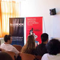
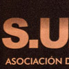
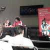
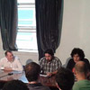
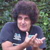
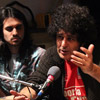
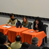
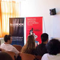
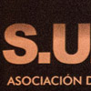
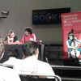
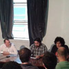
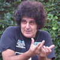
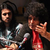
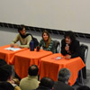
 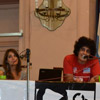
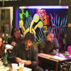
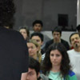
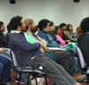
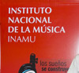
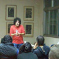
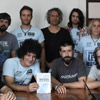
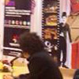
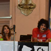
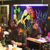
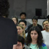
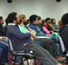
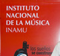
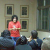
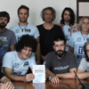
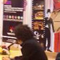


{kind=link}
{kind=link}
{kind=link}
{kind=link}
{kind=link}
{kind=link}
{kind=link}
{kind=link}
{kind=link}
{kind=link}
{kind=link}
{kind=link}
{kind=link}
{kind=link}
{kind=link}
{kind=link}
{kind=link}
{kind=link}
{kind=link}
{kind=link}
{kind=link}
{kind=link}